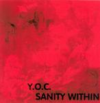

Home Artist links

Y.O.C. - Sanity Within
| Artist: | Y.O.C. |
| Title: | Sanity Within |
| Label: | self produced |
| Length(s): | 14 minutes |
| Year(s) of release: | 2004 |
| Month of review: | [01/2005] |
Line up
Y.O.C. - vocals
Kaya - guitars
Kaan - bass
Kemal - drums
Bijen - guitars
Tracks
| 1) | 'Lone In Darkness | 0.41
|
| 2) | Seeds Of Hate | 4.29
|
| 3) | Sanity Within | 5.31
|
| 4) | No Tomorrow | 3.30
|
| 5) | K.T.T.M.T (Mortos) | 0.42
|
Summary
Yalin Ongun Cosgun (and his band) continue the release of demo's. This is
all self penned material.
The music
'Lone In Darkness is the short opener. The vocals remind me a bit of
the old Arena, quite dramatic. For the rest, these are heavy metal guitars,
with an epic feel. We quickly run into the more straightforward driving
rhythm guitars of Seeds Of Hate. The guitar has a good sense of melody as
well, the thematic riff of this track (which is the same as the one of the
former) shows that. The vocals are often sung ehm as if Yalin bites off
parts of his words. The chorus features aggressive spoken vocals and
Yalin's dramatical support. Nice drive here. The mainidea that I get is a
bit of the epic side of Iron Maiden and a bit of Malmsteen.
The title track, Sanity Within is slower, with a strong focus on the
rhythm guitar. The lead guitar bits are present, but almost hidden behind
the rhythm guitar. This is a nicely, plodding progmetal track, with the
guitar in good form, while the vocals are not typical for metal. In fact,
the vocals are rather 'normal' sounding.
The final real track is the fast paced No Tomorrow. The bass drums hardly
sit still on this one. A rather catchy metal track, with the vocals
lying a bit low in the mix. There is a certain panic in the vocals here.
K.T.T.M.T (Mortos) is the short closer, a staccato rough song fast paced
metal track.
Conclusion
Another demo from Turkey, the band strives to evolve something akin a metal
sound, but with the dramatic vocals of Yalin. The guitarist is a good one,
and the songs are fine, with some good melodic material sprinkled throughout.
Since this essentially a demo recording, it is
obvious that on the production side things could be improved and parts
of the rendition could be refined.
© Jurriaan Hage